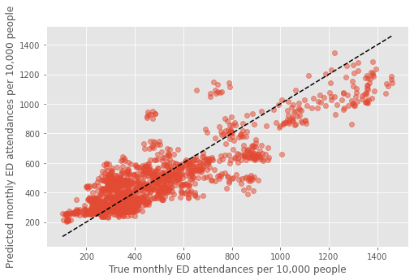
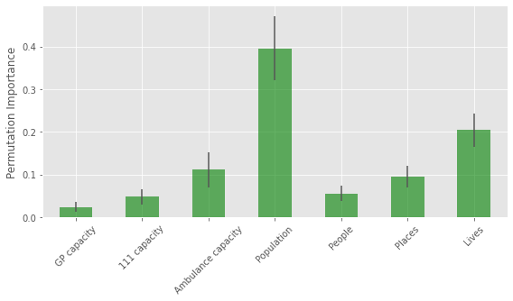

Combined Population Health and Service Capacity Model
Contents
Combined Population Health and Service Capacity Model#
Overview#
This notebook contains the code to develop and test the combined model.
Further details on the development of the population health model can be found here, and the service capacity model can be found here.
#turn warnings off to keep notebook tidy
import warnings
warnings.filterwarnings('ignore')
Import libraries#
import os
import pandas as pd
import numpy as np
import pickle as pkl
from sklearn.linear_model import LinearRegression
from sklearn.ensemble import RandomForestRegressor
from sklearn.ensemble import GradientBoostingRegressor
from sklearn.model_selection import train_test_split
from sklearn.model_selection import GridSearchCV
from sklearn.model_selection import cross_validate
from sklearn.model_selection import RepeatedKFold
import seaborn as sns
import matplotlib.pyplot as plt
%matplotlib inline
plt.style.use('ggplot')
Import data#
dta = pd.read_csv('../data/master_scaled.csv', index_col=0)
dta.columns = ['_'.join([c.split('/')[0],c.split('/')[-1]])
if '/' in c else c for c in dta.columns]
dta.head()
| ccg | month | 111_111_offered | 111_111_answered | amb_sys_made | amb_sys_answered | gp_appt_available | ae_attendances_attendances | population | People | Places | Lives | year | |
|---|---|---|---|---|---|---|---|---|---|---|---|---|---|
| 0 | 00Q | Jan | 406.655830 | 308.945095 | 310.561801 | 234.716187 | 4568.019766 | 1179.855246 | 14.8942 | 97.2 | 99.7 | 94.4 | 2018 |
| 1 | 00Q | Feb | 349.933603 | 256.872981 | 261.756435 | 205.298797 | 3910.918344 | 1075.452189 | 14.8942 | 97.2 | 99.7 | 94.4 | 2018 |
| 2 | 00Q | Mar | 413.247659 | 300.690725 | 303.676215 | 234.716187 | 4051.778545 | 1210.874032 | 14.8942 | 97.2 | 99.7 | 94.4 | 2018 |
| 3 | 00Q | Apr | 349.608595 | 278.140171 | 264.973181 | 203.677924 | 3974.433001 | 1186.166427 | 14.8942 | 97.2 | 99.7 | 94.4 | 2018 |
| 4 | 00Q | May | 361.100544 | 284.419492 | 294.361403 | 227.926437 | 4232.385761 | 1299.297713 | 14.8942 | 97.2 | 99.7 | 94.4 | 2018 |
dta.shape
(1465, 13)
Function to group data#
def group_data(data, features):
features = ['population',
'People', 'Places',
'Lives']
#ensure no identical points in train and test
grouped = pd.DataFrame()
for pop, group in data.groupby('population'):
#if len(group.lives.unique())>1:
#print('multiple CCG with same population')
ccg_year = pd.Series(dtype='float64')
for f in features:
ccg_year[f] = group[f].unique()[0]
ccg_year['ae_attendances_attendances']\
= group.ae_attendances_attendances.mean()
grouped = grouped.append(ccg_year, ignore_index=True)
return grouped
Fit Predict Population Health model#
model = RandomForestRegressor(max_depth=4, n_estimators=2,
random_state=0)
pophealth_features = ['population',
'People', 'Places', 'Lives']
grouped = group_data(dta, pophealth_features)
y = grouped['ae_attendances_attendances']
X = grouped[pophealth_features]
cv = RepeatedKFold(n_splits=5, n_repeats=1, random_state=1)
results = pd.DataFrame()
scores_train, scores_test, feat = [],[],[]
for train_index, test_index in cv.split(X, y):
model.fit(X.iloc[train_index], y.iloc[train_index])
test = X.iloc[test_index].copy()
test['ae_predicted'] = model.predict(X.iloc[test_index])
results = results.append(test, ignore_index=True)
results
| population | People | Places | Lives | ae_predicted | |
|---|---|---|---|---|---|
| 0 | 14.8942 | 97.200000 | 99.700000 | 94.400000 | 951.730426 |
| 1 | 14.9084 | 96.000000 | 99.500000 | 94.600000 | 951.730426 |
| 2 | 20.9547 | 101.100000 | 101.600000 | 101.300000 | 536.982536 |
| 3 | 21.0108 | 98.700000 | 102.100000 | 103.000000 | 772.797845 |
| 4 | 28.5372 | 95.200000 | 100.100000 | 96.600000 | 459.182148 |
| ... | ... | ... | ... | ... | ... |
| 127 | 96.9439 | 97.566667 | 100.366667 | 104.633333 | 336.330076 |
| 128 | 102.5758 | 102.007692 | 103.261538 | 104.907692 | 336.330076 |
| 129 | 103.7356 | 101.088889 | 100.327778 | 103.508333 | 336.330076 |
| 130 | 160.3009 | 104.361111 | 99.211111 | 104.519444 | 422.525438 |
| 131 | 161.1687 | 100.930556 | 100.861111 | 104.850000 | 422.525438 |
132 rows × 5 columns
Merge with data set#
dta = dta.merge(results[['population','ae_predicted']],\
left_on='population', right_on='population')
dta
| ccg | month | 111_111_offered | 111_111_answered | amb_sys_made | amb_sys_answered | gp_appt_available | ae_attendances_attendances | population | People | Places | Lives | year | ae_predicted | |
|---|---|---|---|---|---|---|---|---|---|---|---|---|---|---|
| 0 | 00Q | Jan | 406.655830 | 308.945095 | 310.561801 | 234.716187 | 4568.019766 | 1179.855246 | 14.8942 | 97.2 | 99.7 | 94.4 | 2018 | 951.730426 |
| 1 | 00Q | Feb | 349.933603 | 256.872981 | 261.756435 | 205.298797 | 3910.918344 | 1075.452189 | 14.8942 | 97.2 | 99.7 | 94.4 | 2018 | 951.730426 |
| 2 | 00Q | Mar | 413.247659 | 300.690725 | 303.676215 | 234.716187 | 4051.778545 | 1210.874032 | 14.8942 | 97.2 | 99.7 | 94.4 | 2018 | 951.730426 |
| 3 | 00Q | Apr | 349.608595 | 278.140171 | 264.973181 | 203.677924 | 3974.433001 | 1186.166427 | 14.8942 | 97.2 | 99.7 | 94.4 | 2018 | 951.730426 |
| 4 | 00Q | May | 361.100544 | 284.419492 | 294.361403 | 227.926437 | 4232.385761 | 1299.297713 | 14.8942 | 97.2 | 99.7 | 94.4 | 2018 | 951.730426 |
| ... | ... | ... | ... | ... | ... | ... | ... | ... | ... | ... | ... | ... | ... | ... |
| 1460 | X2C4Y | Aug | 281.008273 | 253.093792 | 459.652700 | 306.843650 | 3982.517935 | 390.405530 | 44.0337 | 93.3 | 98.3 | 97.6 | 2019 | 475.096038 |
| 1461 | X2C4Y | Sep | 263.936917 | 240.868701 | 453.078703 | 305.262399 | 4598.750502 | 388.679580 | 44.0337 | 93.3 | 98.3 | 97.6 | 2019 | 475.096038 |
| 1462 | X2C4Y | Oct | 286.454848 | 254.680032 | 488.348051 | 327.202669 | 5225.611293 | 391.268506 | 44.0337 | 93.3 | 98.3 | 97.6 | 2019 | 475.096038 |
| 1463 | X2C4Y | Nov | 326.984206 | 276.374619 | 499.497654 | 306.953594 | 4606.948769 | 389.542555 | 44.0337 | 93.3 | 98.3 | 97.6 | 2019 | 475.096038 |
| 1464 | X2C4Y | Dec | 365.414559 | 334.346359 | 532.917357 | 311.645611 | 4160.472547 | 404.531075 | 44.0337 | 93.3 | 98.3 | 97.6 | 2019 | 475.096038 |
1465 rows × 14 columns
Combined model#
#capacity utility model
rf1 = RandomForestRegressor(max_depth=5, n_estimators=6,
random_state=0)
#combinator
final = LinearRegression()
train, test = train_test_split(dta,random_state=29)
#split training data into two sets
train_0, train_1 = train_test_split(train, train_size=0.75,
random_state=29)
#capacity utility
capacity_features = ['gp_appt_available',
'111_111_offered', 'amb_sys_answered']
# '111_111_answered', 'amb_sys_made']
pophealth_features = ['population',
'People', 'Places', 'Lives']
#train capacity modeel
y_0 = train_0['ae_attendances_attendances']
X_0 = train_0[capacity_features]
rf1.fit(X_0,y_0)
#predict
y_pred_cu = rf1.predict(train_1[capacity_features])
print(rf1.score(train_1[capacity_features],
train_1['ae_attendances_attendances']))
y_pred_ph = train_1['ae_predicted']
0.343321511524463
X_f = np.vstack([y_pred_cu, y_pred_ph]).T
y_f = train_1['ae_attendances_attendances']
final.fit(X_f,y_f)
final.score(X_f,y_f)
0.7354179625284982
Check performance on held out data#
from sklearn.metrics import r2_score as r2
y_pred_cu = rf1.predict(test[capacity_features])
print(rf1.score(test[capacity_features],
test['ae_attendances_attendances']))
#y_pred_ph = rf2.predict(test[pophealth_features])
y_pred_ph = test['ae_predicted']
print(r2(test['ae_attendances_attendances'], test['ae_predicted']))
y_pred_final = final.predict(np.vstack([y_pred_cu, y_pred_ph]).T)
#print(r2_score(test['ae_attendances_attendances'], y_pred_final))
print(final.score(np.vstack([y_pred_cu, y_pred_ph]).T,
test['ae_attendances_attendances']))
0.32630536112390485
0.6857359625576978
0.715432777083205
Coefficients#
final.coef_
array([0.40449924, 0.80083723])
Combined model with optimised parameters#
def fit_ph(dta, features, model):
if 'ae_predicted' in dta.columns:
dta = dta.drop(['ae_predicted'], axis=1)
grouped = group_data(dta, features)
y = grouped['ae_attendances_attendances']
X = grouped[features]
# dont set random state so that function can be used in overall cv
cv = RepeatedKFold(n_splits=5, n_repeats=1, random_state=1)
results = pd.DataFrame()
for train_index, test_index in cv.split(X, y):
model.fit(X.iloc[train_index], y.iloc[train_index])
test = X.iloc[test_index].copy()
test['ae_predicted'] = model.predict(X.iloc[test_index])
results = results.append(test, ignore_index=True)
dta = dta.merge(results[['population','ae_predicted']],
left_on='population', right_on='population')
return dta
def fit_capacity(dta, features, model):
y = dta['ae_attendances_attendances']
X = dta[features]
model.fit(X,y)
return model
def fit_combined(train, rf1, m1_features, train_size=7/8):
final = LinearRegression()
#split training data into two sets
train_0, train_1 = train_test_split(train,
train_size=train_size,
random_state=29)
#train capactiy model
rf1 = fit_capacity(train_0, m1_features, rf1)
#predict monthly attendances
y_pred_1 = rf1.predict(train_1[m1_features])
#use pre-predicted average attendances
y_pred_2 = train_1['ae_predicted']
#final
X_f = np.vstack([y_pred_1, y_pred_2]).T
y_f = train_1['ae_attendances_attendances']
final.fit(X_f,y_f)
return rf1,final
def cv_combined(dta, rf1, rf2):
# splitter for cross validation
cv = RepeatedKFold(n_splits=5, n_repeats=5, random_state=1)
scores_final, scores_rf1, scores_rf2, coefs = [],[],[],[]
k=1
capacity_features = ['gp_appt_available',
'111_111_offered', 'amb_sys_answered']
pophealth_features = ['population',
'People', 'Places', 'Lives']
dta_pred = pd.DataFrame()
#fit population health independently to avoid data leakage
dta = fit_ph(dta, pophealth_features, rf2)
print(dta.shape)
for train_index, test_index in cv.split(dta):
#print(f'\n Split {k} \n')
train = dta.iloc[train_index]
test = dta.iloc[test_index]
#final models
rf1, final = fit_combined(train, rf1, capacity_features)
coefs.append(final.coef_)
#predict on test data
y_pred_cu = rf1.predict(test[capacity_features])
scores_rf1.append(rf1.score(test[capacity_features],
test['ae_attendances_attendances']))
y_pred_ph = test['ae_predicted']
scores_rf2.append(r2(test['ae_attendances_attendances'],
test['ae_predicted']))
preds = final.predict(np.vstack([y_pred_cu, y_pred_ph]).T)
scores_final.append(final.score(np.vstack([y_pred_cu, y_pred_ph]).T,
test['ae_attendances_attendances']))
test_pred = test.copy()
test_pred['predicted'] = preds
test_pred['true'] = test['ae_attendances_attendances'].values
test_pred['iter'] = [k for i in test_pred.index]
dta_pred = dta_pred.append(test_pred, ignore_index=False)
k+=1
return scores_final, scores_rf1, scores_rf2, dta_pred, coefs
#capacity model
rf1 = RandomForestRegressor(max_depth=5, n_estimators=6, random_state=0)
#population health model
rf2 = RandomForestRegressor(max_depth=4, n_estimators=2, random_state=0)
scores_final, scores_rf1, scores_rf2, \
dta_pred, coefs = cv_combined(dta, rf1, rf2)
(1465, 14)
Results for paper#
results=pd.DataFrame()
results['final'] = scores_final
results['capacity'] = scores_rf1
results['population_health'] = scores_rf2
results.describe()
| final | capacity | population_health | |
|---|---|---|---|
| count | 25.000000 | 25.000000 | 25.000000 |
| mean | 0.712527 | 0.396978 | 0.658971 |
| std | 0.022141 | 0.053012 | 0.023460 |
| min | 0.664053 | 0.264904 | 0.616893 |
| 25% | 0.696290 | 0.356941 | 0.644474 |
| 50% | 0.712380 | 0.399261 | 0.654565 |
| 75% | 0.725122 | 0.434240 | 0.676644 |
| max | 0.753902 | 0.495170 | 0.694800 |
Coefficient importances#
Mean#
np.mean(coefs, axis=0)
array([0.36678442, 0.76288664])
Std#
np.std(coefs, axis=0)
array([0.10534984, 0.04842211])
Plot#
fig,ax = plt.subplots(figsize=(8,5))
mean_pred, true = [],[]
for i in dta_pred.index.unique():
mean_pred.append(dta_pred.loc[i]['predicted'].mean())
true.append(dta_pred.loc[i]['true'].mean())
plt.plot(true, mean_pred, 'o', alpha=0.5)
xx = np.arange(min(dta_pred['true']),max(dta_pred['true']))
plt.plot(xx,xx,'k--')
plt.xlabel('True monthly ED attendances per 10,000 people')
plt.ylabel('Predicted monthly ED attendances per 10,000 people')
plt.savefig('true_predicted_combined.png')
plt.show()

Permutation Feature Importance#
def fit_ph_shuffle(dta, features,f, model):
if 'ae_predicted' in dta.columns:
dta = dta.drop(['ae_predicted'], axis=1)
grouped = group_data(dta, features)
y = grouped['ae_attendances_attendances']
X = grouped[features]
X_shuffled = X.copy()
X_shuffled[f] = np.random.permutation(X[f].values)
# dont set random state so that function can be used in overall cv
cv = RepeatedKFold(n_splits=5, n_repeats=1, random_state=1)
results = pd.DataFrame()
for train_index, test_index in cv.split(X, y):
model.fit(X.iloc[train_index], y.iloc[train_index])
test = X.iloc[test_index].copy()
test['ae_predicted'] = model.predict(X_shuffled.iloc[test_index])
results = results.append(test, ignore_index=True)
dta = dta.merge(results[['population','ae_predicted']],
left_on='population', right_on='population')
return dta
def permeate_feature(dta, f,rf1, rf2):
shuffled = dta.copy()
capacity_features = ['gp_appt_available',
'111_111_offered', 'amb_sys_answered']
# '111_111_answered', 'amb_sys_made']
pophealth_features = ['population',
'People', 'Places', 'Lives']
if f in capacity_features:
shuffled[f] = np.random.permutation(dta[f].values)
else:
shuffled = fit_ph_shuffle(shuffled, pophealth_features,f, rf2)
dta = fit_ph(dta, pophealth_features, rf2)
# splitter for cross validation
cv = RepeatedKFold(n_splits=5, n_repeats=5, random_state=1)
#importances = pd.DataFrame()
shuffled_score, true_score = [],[]
#print(f'running for {f} \n')
for train_index, test_index in cv.split(dta):
test_shuffled = shuffled.iloc[test_index]
train = dta.iloc[train_index]
test = dta.iloc[test_index]
#final models
rf1, final = fit_combined(train, rf1, capacity_features)
#predict on test data
y_pred_cu = rf1.predict(test[capacity_features])
y_pred_ph = test['ae_predicted']
y_pred_cus = rf1.predict(test_shuffled[capacity_features])
if f in capacity_features:
y_pred_phs = test['ae_predicted']
else:
y_pred_phs = test_shuffled['ae_predicted']
true_score.append(
final.score(np.vstack([y_pred_cu, y_pred_ph]).T,\
test['ae_attendances_attendances']))
shuffled_score.append(
true_score[-1] - final.score(np.vstack([y_pred_cus, y_pred_phs]).T,\
test['ae_attendances_attendances']))
#print(f'{f} complete\n')
return true_score, shuffled_score
def feature_importance_combined(dta, rf1, rf2):
importances = pd.DataFrame()
capacity_features = ['gp_appt_available',
'111_111_offered', 'amb_sys_answered']
# '111_111_answered', 'amb_sys_made']
pophealth_features = ['population',
'People', 'Places', 'Lives']
for f in capacity_features + pophealth_features:
true_score, shuffled_score = permeate_feature(dta, f,rf1, rf2)
if 'score' in importances.columns:
importances['score'] = np.mean([importances['score'].values, true_score],axis=0)
else:
importances['score'] = true_score
importances[f] = shuffled_score
return importances
#set random seed to make results reproducible
np.random.seed(4)
importances = feature_importance_combined(dta, rf1, rf2)
importances.describe()
| score | gp_appt_available | 111_111_offered | amb_sys_answered | population | People | Places | Lives | |
|---|---|---|---|---|---|---|---|---|
| count | 25.000000 | 25.000000 | 25.000000 | 25.000000 | 25.000000 | 25.000000 | 25.000000 | 25.000000 |
| mean | 0.712527 | 0.013235 | 0.063915 | 0.068951 | 0.349971 | 0.097549 | 0.014294 | 0.140716 |
| std | 0.022141 | 0.009803 | 0.027243 | 0.039107 | 0.056355 | 0.038902 | 0.006521 | 0.030197 |
| min | 0.664053 | -0.005824 | 0.020377 | 0.016285 | 0.256957 | 0.010919 | 0.000351 | 0.096899 |
| 25% | 0.696290 | 0.007920 | 0.045883 | 0.046681 | 0.313557 | 0.069662 | 0.010273 | 0.116949 |
| 50% | 0.712380 | 0.012245 | 0.060437 | 0.055817 | 0.337457 | 0.103614 | 0.014528 | 0.141273 |
| 75% | 0.725122 | 0.017571 | 0.074977 | 0.077036 | 0.390045 | 0.122522 | 0.018829 | 0.160813 |
| max | 0.753902 | 0.042093 | 0.116276 | 0.181854 | 0.460101 | 0.170926 | 0.025635 | 0.207033 |
fig,ax = plt.subplots(figsize=(8,5))
importances[importances.columns[1:]].describe().loc['mean'].plot(kind='bar', \
yerr = importances[importances.columns[1:]].describe().loc['std'],\
alpha=0.6, color='g',ax=ax)
plt.ylabel('Permutation Importance', fontsize=12)
plt.tight_layout()
tick_labels = ['GP capacity','111 capacity', 'Ambulance capacity',\
'Population', 'People', 'Places', 'Lives']
ax.set_xticklabels(tick_labels)
plt.savefig('importance.png')
plt.show()

Train final model on all data and save for forecasting#
def fit_final(dta, rf1, rf2, m1_features, m2_features):
final = LinearRegression()
#train capactiy model
rf1 = fit_capacity(dta, m1_features, rf1)
#predict monthly attendances
y_pred_1 = rf1.predict(dta[m1_features])
grouped = group_data(dta, m2_features)
y = grouped['ae_attendances_attendances']
X = grouped[m2_features]
rf2.fit(X, y)
y_pred_2 = rf2.predict(dta[m2_features])
X_f = np.vstack([y_pred_1, y_pred_2]).T
y_f = dta['ae_attendances_attendances']
final.fit(X_f,y_f)
print('Combined training score:',final.score(X_f,y_f))
return rf1,rf2, final
m1_features = capacity_features
m2_features = pophealth_features
rf1,rf2,final = fit_final(dta, rf1, rf2, m1_features, m2_features)
Combined training score: 0.7935722670846808
with open('stacked_model_scaled.pkl','wb') as f:
pkl.dump([[rf1,rf2,final], m1_features, m2_features], f)